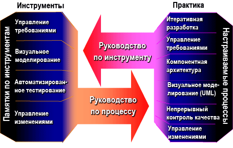

| Лучшие наработки |
 |
|
Взаимосвязи
| Материалы |
|---|
Основное описание
В Rational Unified Process® приведены примеры применения различных подходов к разработке программного обеспечения. Кроме того, даны рекомендации по автоматизации процесса разработки программного обеспечения с помощью различных специализированных инструментов.  |
© Copyright IBM Corp. 1987, 2006. Все права защищены.. |